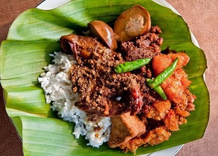

REKOMENDASI

Makanan Jogja yang bikin ngiler
Kuliner
Muhammad Yunus | 99 Desember 1945
Jogja, atau Yogyakarta, tidak hanya terkenal dengan keindahan budayanya, tetapi juga dengan kelezatan kuliner yang khas dan menggoda selera. Kota ini menawarkan berbagai hidangan lezat yang dapat memanjakan lidah para pengunjungnya. Mari kita telusuri beberapa kuliner khas Jogja yang patut dicoba.

Makanan Jogja yang bikin ngiler
Kuliner
Muhammad Yunus | 99 Desember 1945
Jogja, atau Yogyakarta, tidak hanya terkenal dengan keindahan budayanya, tetapi juga dengan kelezatan kuliner yang khas dan menggoda selera. Kota ini menawarkan berbagai hidangan lezat yang dapat memanjakan lidah para pengunjungnya. Mari kita telusuri beberapa kuliner khas Jogja yang patut dicoba.